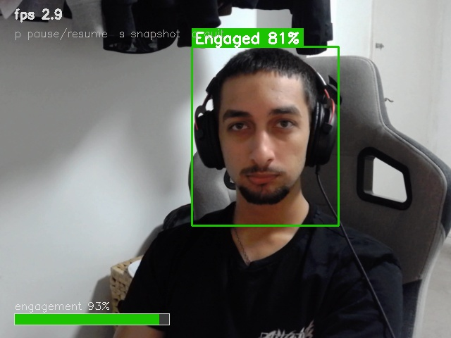
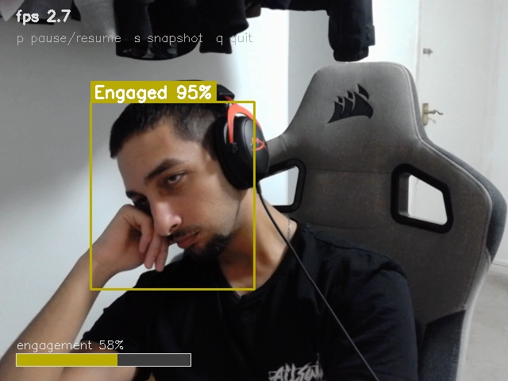
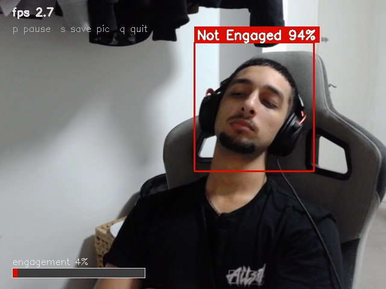
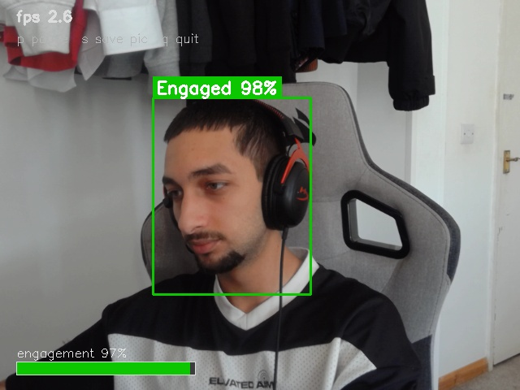

Live demo
Allow camera access, then sit naturally in frame. The model crops the largest detected face, classifies it as Engaged or Not Engaged, and shows a smoothed engagement score.
Camera is off
Click Start camera to beginHow it works
Face detection
Each frame is scanned with BlazeFace. The largest face is selected and padded by 30% — the same margin used in the original pipeline.
Preprocessing
The crop is resized to 224×224 and scaled to the [-1, 1] range expected by ResNet50V2 (resnet_v2.preprocess_input).
Classification
A fine-tuned ResNet50V2 head outputs a 2-class softmax. The probability of the Engaged class drives the on-screen score and colour.
Smoothing
Predictions are averaged over a rolling window of 12 frames so the meter stays stable instead of flickering frame-to-frame.
Model architecture
Input(224, 224, 3)
→ ResNet50V2 (ImageNet weights, include_top=False)
→ GlobalAveragePooling2D
→ Dense(128, relu, L2=1e-3)
→ Dropout(0.6)
→ Dense(2, linear) → Softmax
Classes: ["Not Engaged", "Engaged"]
Dataset: DAiSEESample outputs
Snapshots captured from the desktop demo (demo.py).



